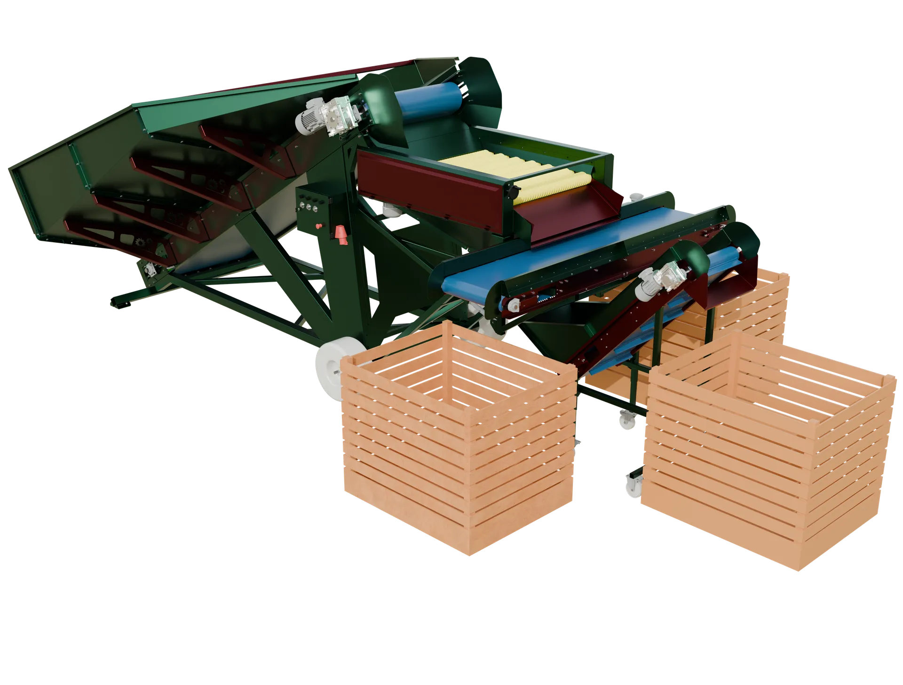
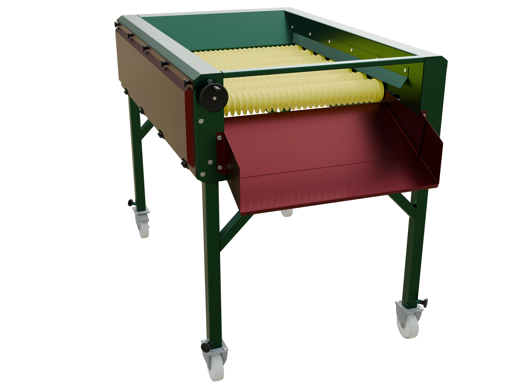
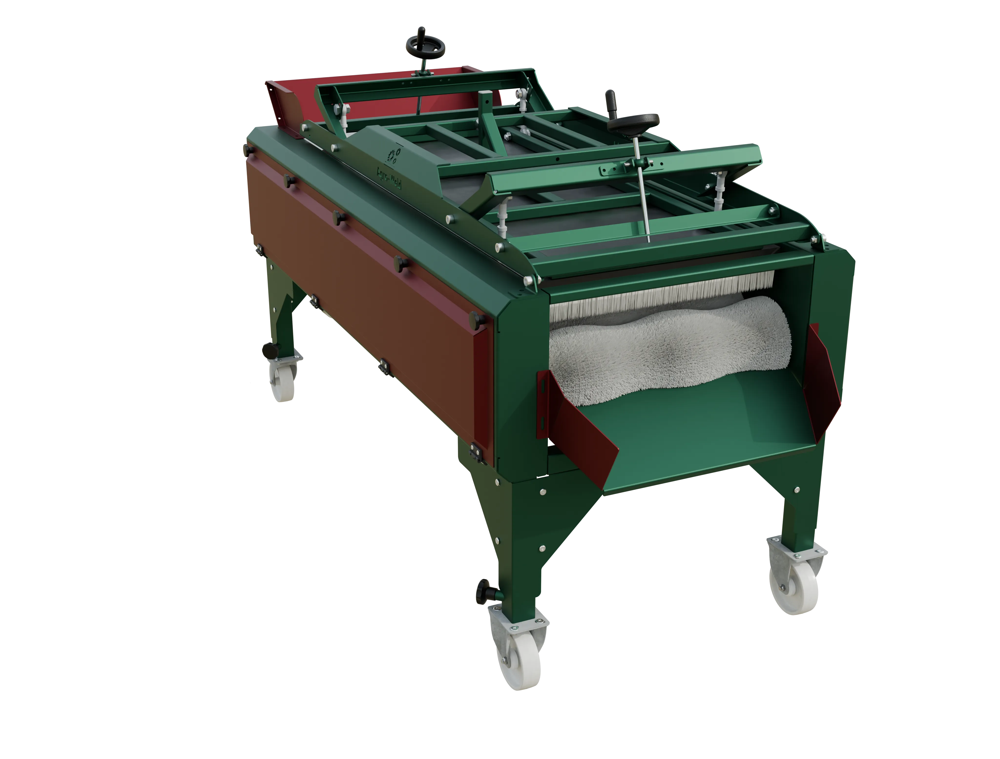

Wybierz, co chcesz edytować. Każda zmiana trafia na stronę po kliknięciu „Opublikuj" (ok. 2 minuty).
{{ titleHint }}
Opisz, co widać na zdjęciu — czyta to Google i osoby niewidome. Max 125 znaków.

44/125
49/125
0/125AI przetłumaczy polski tekst na 4 języki. Możesz potem każdy poprawić ręcznie.
Kliknięcie „Edytuj" otwiera formularz: nazwa, opis, modele, tabela danych technicznych, zdjęcia z altami — z tłumaczeniem AI jak w Tekstach.
Dobór kosza przyjęciowego to pierwsza decyzja przy projektowaniu linii. Zbyt mały kosz zatrzymuje rozładunek, zbyt duży niepotrzebnie podnosi koszt inwestycji.
Od czego zacząć?
Punktem wyjścia jest dobowa wielkość przyjęcia oraz sposób dostawy — przyczepy, skrzyniopalety czy big-bagi…
Zdjęcie zostanie automatycznie zmniejszone i skompresowane
Wypełnia się samo z tytułu i treści. Możesz poprawić.